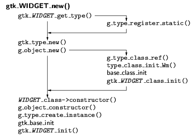
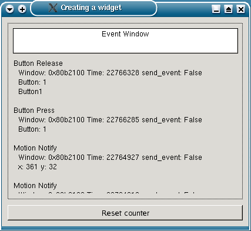

Toolkit GTK+ má svùj vlastní typový systém, definovaný v knihovnì GObject. Ka¾dý datový typ má unikátní numerický identifikátor typu (GType), pøidìlený pøi registraci typu. V rámci inicializace toolkitu ve funkci gtk_init se registrují fundamentální typy, tj. primitivní typy jazyka C (napø. int má identifikátor G_TYPE_INT) a G_TYPE_OBJECT, oznaèující základní objektový typ GObject. V¹echny tøídy v GTK+ jsou odvozené z GObject. Typový systém nepodporuje vícenásobnou dìdiènost, místo ní má interfejsy. Tøídy nezaregistrované v gtk_init se automaticky registrují v okam¾iku vytvoøení prvního objektu dané tøídy. Pro ka¾dou tøídu jsou definovány dvì struktury. Struktura pro instanci obsahuje data konkrétního objektu. Ve struktuøe pro tøídu jsou ukazatele na funkce. Je to obdoba tabulky virtuálních metod pou¾ívané v C++. Ve struktuøe pro tøídu mohou být i data tøídy (obdoba èlenù static v C++). Pro tento úèel se ale èastìji pou¾ívají static promìnné definované v souboru .c implementujícím tøídu. Prvním prvkem ka¾dé struktury je v¾dy struktura bázového typu. Tím je zaji¹tìno, ¾e bude korektnì fungovat pøetypování na pøedka. Napø. pro typ GtkButton jsou v souboru gtkbutton.h definice
typedef struct _GtkButton GtkButton;
typedef struct _GtkButtonClass GtkButtonClass;
struct _GtkButton
{
GtkBin bin;
...
};
struct _GtkButtonClass
{
GtkBinClass parent_class;
...
};
Pro ka¾dý typ widgetu WIDGET existuje funkce gtk_WIDGET_get_type, je¾ vrací identifikátor typu. Dále je definováno mnoho maker pro manipulaci s typy, napø.:
Objekt nìjakého typu WIDGET se vytvoøí funkcí gtk_WIDGET_new. Pro nìkteré typy widgetù existuje takových funkcí víc. Li¹í se jménem a parametry. Napø. pro tøídu GtkMenuItem jsou definované funkce gtk_menu_item_new, gtk_menu_item_new_with_label a gtk_menu_item_new_with_mnemonic. Na obr. 1 je schematicky znázornìn postup vytvoøení widgetu.

Obr. 1: Vytvoøení widgetu
Vytvoøení widgetu typu WIDGET zaèíná zavoláním funkce gtk_WIDGET_new. Ta na zaèátku zjistí identifikátor typu voláním gtk_WIDGET_get_type. Pokud je tato funkce pou¾ita poprvé, musí zaregistrovat tøídu v typovém systému knihovny GObject. To udìlá pomocí funkce g_type_register_static, které pøedá identifikátor rodièovského typu a strukturu obsahující jméno novì registrované tøídy, velikosti struktur pro tøídu a pro instanci a ukazatele na inicializaèní funkce.
Identifikátor typu se pøedá funkci gtk_type_new, je¾ volá g_object_new. Tato funkce pøed vytvoøením první instance daného typu inicializuje strukturu pro tøídu voláním g_type_class_ref, která dále volá funkci type_class_init_Wm. Ta alokuje strukturu pro tøídu a zkopíruje do ní – na zaèátek – strukturu rodièovské tøídy. Jestli¾e nepostaèuje bázovou tøídu zkopírovat, lze pro tøídu definovat funkci zaji¹»ující dal¹í inicializaci kopie bázové tøídy. Tyto inicializaèní funkce se volají postupnì v celé posloupnosti bázových tøíd ve smìru od koøene hierarchie po rodièe právì inicializované tøídy. Nakonec se provede inicializaèní funkce tøídy, která pøedev¹ím zajistí registraci properties a signálù.
Kdy¾ je registrovaný typ a inicializována struktura pro tøídu, je mo¾né vytvoøit instanci. Funkce gtk_type_new zavolá konstruktor definovaný pro tøídu, její¾ objekt se vytváøí. Konstruktor nejprve spustí konstruktor rodièovské tøídy. Konstruktor g_object_constructor spoleèného pøedka – tøídy GObject – alokuje pamì» pro strukturu instance. Pak zavolá postupnì inicializaèní funkce pro objekty bázových tøíd a tím inicializuje první polo¾ku struktury objektu, která obsahuje zdìdìná data. Nakonec se zavolá funkce pro inicializaci novì definovaných polo¾ek. Tím volání gtk_WIDGET_new konèí a vrací ukazatel na novì vytvoøený objekt.
Properties jsou hodnoty pøiøazené objektùm a identifikované pomocí øetìzcových klíèù. Jméno property se zadává buï samostatnì (napø. "border_width"), nebo spolu se jménem tøídy (napø. "GtkContainer::border_width"). Properties se dìdí. Pøi ètení nebo nastavování hodnoty se property daného jména hledá od tøídy objektu, s jeho¾ property se pracuje, smìrem ke GObject. Properties se nastavují funkcí g_object_set a ètou funkcí g_object_get. Pro nìkteré properties existují i specializované funkce, které s nimi manipulují. Napø. gtk_container_set_border_width má stejný efekt jako nastavení hodnoty property "GtkContainer::border-width". Funkce g_object_class_list_properties slou¾í ke zji¹tìní jmen v¹ech properties definovaných v nìjaké tøídì.
Properties pøedstavují jednotné rozhraní, pøes které lze manipulovat s hodnotami uvnitø objektù. Díky tomu, ¾e jména properties jsou øetìzce, dá se manipulace s nimi naprogramovat i bez apriorní znalosti jmen v¹ech properties, s nimi¾ se bude pracovat. To je výhodné pøi implementaci rozhraní zpøístupòujícího GTK+ z nìjakého skriptovacího jazyka, nebo pro programy na grafický interaktivní návrh GUI, jako je Glade.
Properties se definují v inicializaèní funkci tøídy voláním funkce g_object_class_install_property. Ve tøídì, která definuje vlastní properties, je nutné implementovat funkce pro ètení a nastavování properties definovaných v této tøídì a ukazatele na nì pøiøadit do ((GObject *)klass)->get_property a ((GObject *)klass)->set_property, kde klass je struktura pro tøídu. Není tøeba se starat o zdìdìné properties, proto¾e se pro nì automaticky volají pøíslu¹né funkce bázových tøíd. Funkce pro manipulaci s properties mohou dìlat i komplexnìj¹í vìci ne¾ jen èíst èi mìnit nìjakou datovou polo¾ku objektu. Lze si napø. pøedstavit dvojici properties, jedna bude obsahovat ¹íøku widgetu v pixelech a druhá v milimetrech. V datech objektu bude ulo¾ena pouze ¹íøka v pixelech. ©íøka v milimetrech se bude dynamicky dopoèítávat podle rozli¹ení obrazovky. Zmìna ¹íøky navíc zpùsobí pøekreslení widgetu.
V inicializaèní funkci tøídy se definují také signály. Signály se rovnì¾ dìdí. Pøi definici signálu funkcí g_signal_new se zadává
Zru¹ení widgetu zaèíná voláním g_object_unref nebo gtk_widget_destroy. Vlastní destrukce widgetu je rozdìlena do tøí fází. Metoda dispose zru¹í X okno widgetu a vyjme widget z rodièovského kontejneru. Pak emituje signál "destroy" a tím zahájí druhou fázi. Handler destroy oznaèí objekt jako „nepou¾itelný“ a uvolní s ním asociované systémové zdroje vyjma samotné struktury instance. V pøípadì, ¾e widget je kontejner, zru¹í synovské widgety. Mìlo by v¹ak jít stále volat ve¹keré veøejné metody (proto¾e na objekt stále mohou existovat platné reference), ty sice u¾ nebudou nic dìlat, nicménì program nehavaruje. Poslední fáze – finalize – se provede, teprve kdy¾ poèet referencí na objekt klesne na nulu. Uvolní se struktura instance a tím se definitivnì dokonèí zru¹ení widgetu.
Metoda realize ve tøídì GtkWidget funguje pouze pro widgety, které nemají vlastní GDK/X okno. Pro ostatní widgety je nutno metodu realize pøedefinovat tak, ¾e nastaví pøíznak GTK_REALIZED, vytvoøí GDK okno voláním gdk_window_new, ukazatel na nì ulo¾í do widget->window, k oknu pøidá odkaz zpìt na widget pomocí gdk_window_set_user_data(widget->window, widget) a nastaví styl widgetu voláním gtk_style_attach.
Metoda unrealize odmapuje a zru¹í GDK okno widgetu (pokud widget GDK okno má). Jestli¾e je widget kontejner, zavolá nejprve unrealize pro v¹echny synovské widgety.
Metody map a unmap nastaví, resp. zru¹í pøíznak widgetu GTK_WIDGET_MAPPED a zobrazí/schová GDK okno widget->window. Ne¾ se widget objeví na obrazovce, je nutné nastavit jeho velikost s vyu¾itím metod size_request a size_allocate tak, jak to bylo popsáno v kapitole o kontejnerech ve tøetím dílu tohoto seriálu.
Widget, který není jen neviditelným kontejnerem pro jiné widgety, se musí umìt nakreslit na obrazovku. Potøeba pøekreslit widget mù¾e nastat z nìkolika dùvodù. Jestli¾e se neviditelná èást okna widgetu stane viditelnou – napø. proto¾e se pøesune nebo odmapuje okno, které ji zakrývalo – dostane widget od X serveru událost "expose-event". Handler události zajistí kreslení. Nìkdy se o pøekreslení rozhodne samo GTK+ (pøi zmìnì velikosti widgetu nebo pøi nastavení nové theme). Pøi zmìnì svého stavu se widget pøekreslí sám od sebe. Obsah widgetù v GTK+ se kreslí s pou¾itím kreslicích funkcí knihovny GDK. Je¹tì lep¹í, ne¾ kreslit pøímo pomocí GDK, je vyu¾ít funkce z theme, aby vzhled widgetu ladil s ostatními a dal se mìnit zmìnou theme.

Obr. 2: Definice nového widgetu
Ukázka definice nového widgetu GtkEv je v souborech gtkev.h a gtkev.c. Tento widget má podobnou funkci jako program xev z distribuce X, tj. vypisuje informace o událostech, které dostává. Widget je zvlá¹tní tím, ¾e má dvì GDK okna. Widget je pou¾it v programu gtk_ev_usage.c. Okno tohoto programu je na obr. 2. Widget GtkEv je upravený stejnojmenný widget z knihy Havoc Pennington: GTK+/GNOME Application Development.